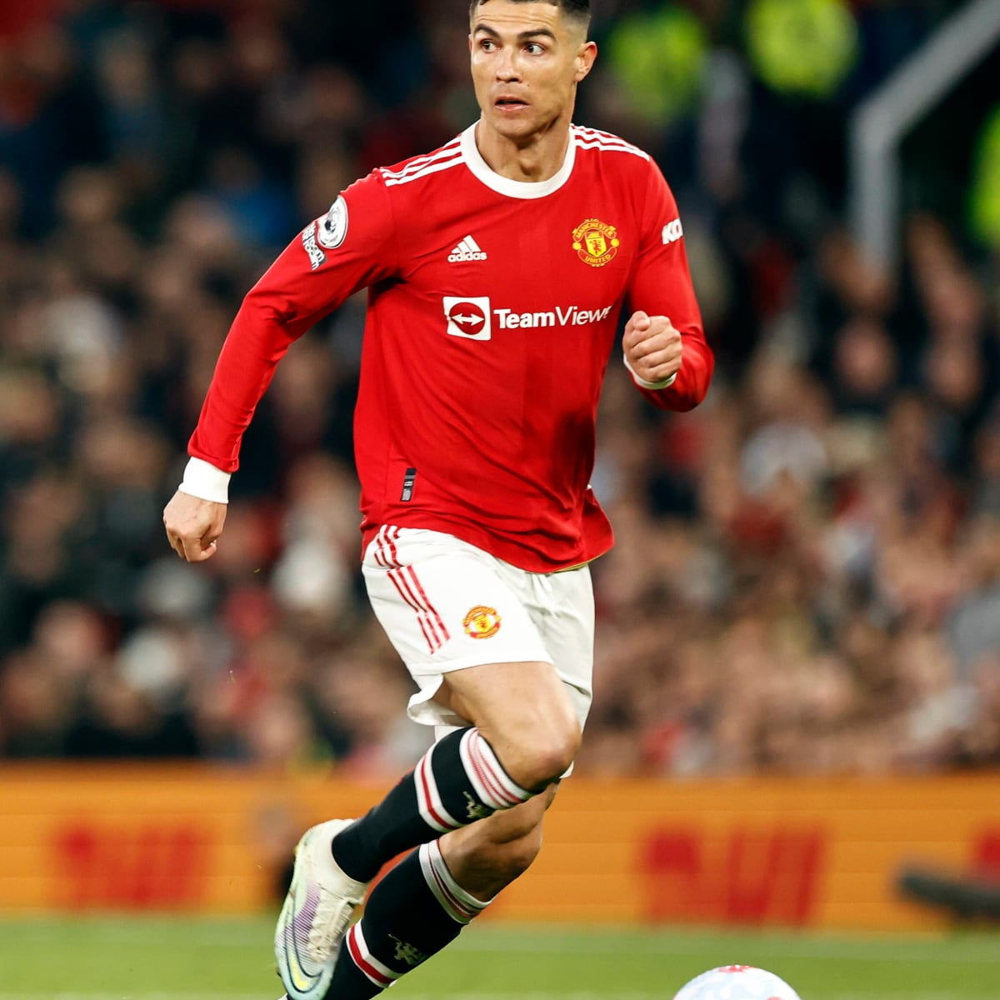

| Name | Cristiano Ronaldo |  |
| Age | 37 Years | |
| Born | February 5, 1985, Hospital Dr. Nélio Mendonça, Funchal, Portugal | |
| Job | Professional Footballer | |
| Nationality | Portugal | |
| Current Team | Manchester United | |
| Height | 1.87 m | |
| partner | : Georgina Rodríguez (2017- ) | |
| Net Salary | 26.52 million GBP (2022) | |
| Children | Cristiano Ronaldo Jr., Eva Maria Dos Santos, Alana Martina dos Santos Aveiro, Bella Esmeralda, Mateo Ronaldo |
Ronaldo began his senior career with Sporting CP, before signing with Manchester United in 2003, aged 18, winning the FA Cup in his first season. He would also go onto win three consecutive Premier League titles, the Champions League and the FIFA Club World Cup; at age 23, he won his first Ballon d'Or. Ronaldo was the subject of the then-most expensive association football transfer when he signed for Real Madrid in 2009 in a transfer worth €94 million (£80 million), where he won 15 trophies, including two La Liga titles, two Copa del Rey, and four Champions Leagues, and became the club's all-time top goalscorer. He won back-to-back Ballons d'Or in 2013 and 2014, and again in 2016 and 2017, and was runner-up three times behind Lionel Messi, his perceived career rival. In 2018, he signed for Juventus in a transfer worth an initial €100 million (£88 million), the most expensive transfer for an Italian club and for a player over 30 years old. He won two Serie A titles, two Supercoppe Italiana, and a Coppa Italia, before returning to United in 2021.
Ronaldo made his international debut for Portugal in 2003 at the age of 18 and has since earned over 180 caps, making him Portugal's most-capped player. With more than 100 goals at international level, he is also the nation's all-time top goalscorer. Ronaldo has played in and scored at 11 major tournaments; he scored his first international goal at Euro 2004, where he helped Portugal reach the final. He assumed captaincy of the national team in July 2008. In 2015, Ronaldo was named the best Portuguese player of all time by the Portuguese Football Federation. The following year, he led Portugal to their first major tournament title at Euro 2016, and received the Silver Boot as the second-highest goalscorer of the tournament. He also led them to victory in the inaugural UEFA Nations League in 2019, and later received the Golden Boot as top scorer of Euro 2020.
Over the course of his career, Portuguese footballer Cristiano Ronaldo has received five Ballon d'Or/FIFA Ballon d'Or awards,[a] the most for a European player. Widely regarded as one of the greatest players of all time,[1][2][b] Ronaldo holds the record for most goals and assists in the UEFA Champions League (140 and 42 respectively), and the record for most goals in the UEFA European Championship (14), its qualification stage (31), and the FIFA Club World Cup (7), as well as most goals scored in a UEFA Champions League season (17), most international goals (115), and most appearances in a European national team (180). He has scored a record 812 senior career goals for club and country. Moreover, he is one of the few recorded players to have made over 1,100 professional career appearances.